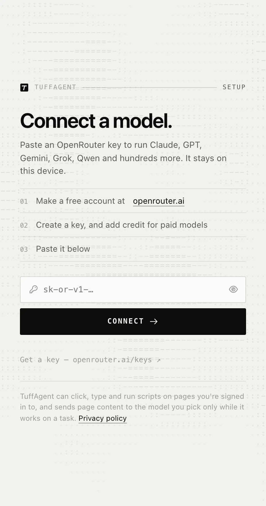
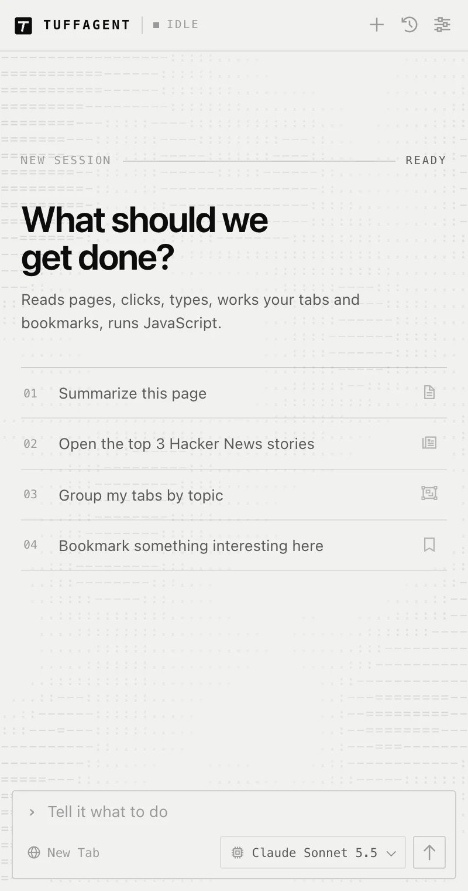

Get started
Set up TuffAgent
Install the extension, connect a model, and give it something to do. The whole thing takes a couple of minutes.
Install the extension
The quickest way is from your browser’s store, using the buttons above. You can also load it straight from the source code, which is what the store versions are built from. There’s no build step.
Chrome 121 or later
- Download the source from GitHub, or run
git clone https://github.com/beckettclarke/TuffAgent.git - Open
chrome://extensionsand turn on Developer mode. - Click Load unpacked and choose the
TuffAgentfolder. - Click the toolbar icon, or press ⌘ ⇧ Y (Ctrl Shift Y on Windows and Linux).
Firefox 128 or later
- Download the source from GitHub, or run
git clone https://github.com/beckettclarke/TuffAgent.git - Open
about:debugging#/runtime/this-firefoxand click Load Temporary Add-on… - Choose
manifest.jsonin theTuffAgentfolder. - Click the toolbar icon or press the shortcut to show the sidebar. If Firefox asks, allow access to all websites; without it the agent can’t read or click pages.
A temporary add-on is removed when Firefox quits. To keep it, run npx web-ext build and install the zip in Firefox Developer Edition or Nightly with xpinstall.signatures.required turned off, or install from Firefox Add-ons.
Connect a model
The first time you open the panel, TuffAgent asks for an OpenRouter key.
- Make a free account at openrouter.ai.
- Create a key at openrouter.ai/keys, and add credit if you want to use paid models.
- Paste the key into TuffAgent and click Connect.
The key is stored only in this browser and is only ever sent to OpenRouter. You can disconnect it from Settings.

Give it a task
Type what you want in the composer and press ⏎. Start with something small on the page you’re looking at, like Summarize this page or Group my tabs by topic, and watch how it works.
- Press Esc to stop it at any time.
- In an empty composer, ↑ brings back earlier prompts.
- The model menu in the composer switches models without leaving the chat.
Worth knowing: TuffAgent can click, type and run JavaScript on any site you’re signed in to. Give it tasks you’d be comfortable doing yourself, and watch the first few runs on sites that matter.

Firefox
What’s different in Firefox
Firefox doesn’t give extensions the DevTools protocol, so TuffAgent does those jobs another way there: page dialogs are answered from inside the page, actions wait on the network through webRequest, and pasting goes through the page’s own paste command. Firefox asks for clipboard access once, with your first message.
Chrome only, for now
- Trusted input. Firefox always uses in-page events, which a few stubborn sites ignore.
- Site packs for Google Docs and Canva.
- Running JavaScript on pages whose security policy blocks it.
Tab grouping needs Firefox 138 or later. If the shortcut clashes with one of Firefox’s own, change it under about:addons › gear menu › Manage Extension Shortcuts.
Chrome
About the debugging bar
With Trusted input on, Chrome shows a bar saying TuffAgent started debugging this browser while the agent acts. That’s expected.
Trusted input sends real mouse and keyboard events, which some sites need. It’s attached only to the tab the agent is working in, only during a task. You can turn it off in Settings; the agent then uses in-page events, as it does in Firefox.
Ready when you are.
Install TuffAgent from your browser’s store. Updates arrive automatically.
Prefer to run it from source? See the manual install steps.